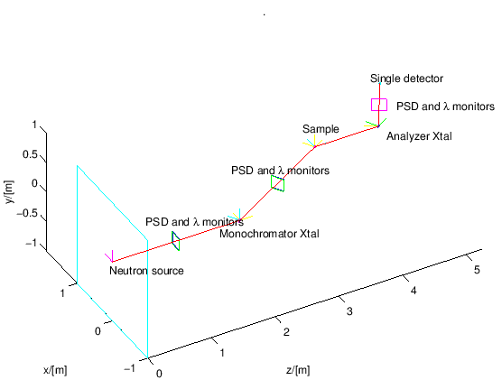

Next: Exercise: Source and PSD
Up: McStas neutron ray-trace tutorial
Previous: Basic McStas
Throughout the rest of this paper, you will have to do the work!
Through a series of small exercises, you will set up and use two simple
neutron scattering instruments: a diffractometer and a triple axis spectrometer. To get an idea of what your final
instrument might look like, see the sample instrument portrayed in Figure 2.
In subsection 5.7 is shown what the final exercise instrument file might look like. It is advisable to only use this file when stuck as learning by doing (yourself) is preferable to copying.
Figure 2:
Illustration of a triple axis diffractometer.
|

|
Subsections
Peter Kjær Willendrup
2015-11-12